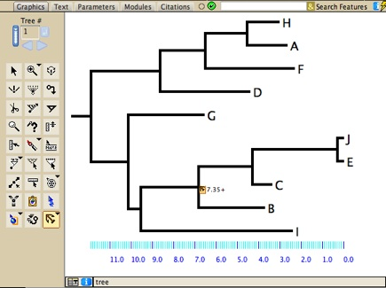
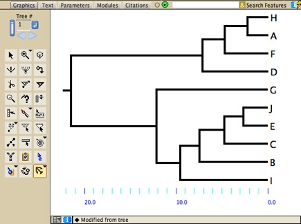

|
|
Wayne Maddison & Hilmar Lapp
The Mesquite.R package provides basic services for Mesquite to make use of functions in the R statistical language. With Mesquite.R, Mesquite users can have access to the broad array of computations in R. Mesquite.R also provides services for R users to make use of Mesquite from within R, but insofar as this use is initiated from R, its description is given in connection with the RMesquite package in R.
As a Mesquite user, you don't have access to all functions of R — you have access to those functions for which translation modules have been written. To date we have written translation modules for some functions of the R packages ape (Paradis et al.) and diversitree (FitzJohn). For details of the functions available, see the documentation on the translation packages for ape and diversitree.
For instance you can display a tree in a tree window, use a special tool to constrain the ages of nodes, then call ape's chronopl function directly from a menu item in Mesquite. Mesquite sends the tree to chronopl and then receives the tree modified with branch lengths adjusted by penalized likelihood rate smoothing:
|  |  |
| Before | After calling chronopl |
Mesquite's use of functions in R requires the following:
You will need to start up Mesquite in a special way to have access to R. At present, you will need to start Mesquite by double clicking on a special script file called "mesquiteForR.sh", or "mesquiteForR.command", or "mesquiteForR.bat". These scripts start up Mesquite in such a way that it can find the resources to run R.
Once you have started Mesquite, the available functions in R will appear as regular Mesquite menu items, marked by the R package needed (e.g. "Penalized Likelihood (ape: chronopl)").
DISCLAIMER: some of the R functions that Mesquite.R is employing may have bugs or misbehaviours. We aren't responsible for these.
Mesquite needs to be started up in a special way in order to have access to R. In this version of Mesquite.R we have provided script files that serve to start up Mesquite:
Because Mesquite.R involves communication between a Java program (Mesquite) and R, any problems using it might arise from Mesquite, from R, or from the communication between them. Mesquite will try to inform you where the problem is, but some problems might cause Mesquite to simply crash (in some cases, there is little Mesquite can do about this).
On all operating systems you must have installed correctly R, the specialized R packages (such as ape or diversitree), Mesquite, and the Mesquite.R packages. In addition, there are some operating-system quirks that could cause problems.
For the technically inclined, the two issues in starting Mesquite for connecting to R is that the environment variable R_HOME may need to be specified or R's needs to be among the PATH variables, and the jri library file needs to be in a known location.
Mac OS X — You can arrange to use R from Mesquite when Mesquite is started up from the double clickable applications, but you need to make some adjustments. First, the library file libjri.jnilib must be present within Mesquite_Folder/lib, and it must be of the version appropriate for your installation of R. Also, R_HOME needs to be specified within a file called environment.plist with a directory called ".MacOSX" within your user's home folder. The environment.plist is a text file that looks like this:
<?xml version="1.0" encoding="UTF-8"?>
<!DOCTYPE plist SYSTEM "file://localhost/System/Library/DTDs/PropertyList-1.0.dtd">
<plist version="1.0">
<dict>
<key>R_HOME</key>
<string>/Library/Frameworks/R.framework/Resources</string>
</dict>
</plist>
Windows — The file mesquiteForR.bat must contain the correct path to R. Mesquite, when it starts up, will attempt to check this file and correct it. In case it doesn't, you can try to correct it yourself by opening it in a text editor. For instance, if you are using R 2.10.0, the first line of this file should be "set PATH=%PATH%;C:\Program Files\R\R-2.10.0\bin". You can also change the version of R used by selecting File>Setup>Set R Version to Use. You can arrange to use R from Mesquite when Mesquite is started up from the double clickable applications, but you need to make some adjustments. First, the library file jri.dll must be present within Mesquite_Folder/lib, and it must be of the version appropriate for your installation of R. Also, R must be listed in your PATH environmental variables.
Source code of Mesquite.R is available at http://svn.mesquiteproject.org:8080/repository/MesquiteR/
If you are using Mesquite to call R packages that do important calculations, then you should cite the R package involved. For instance, if the primary calculation is done by an R package, then we suggest a citation like this: "The <insert analysis name here> analysis was performed by the R package <insert name of R package here> (author, date) version <insert version number here>, run via the Mesquite.R package (Maddison & Lapp, 2009) in Mesquite 2.75 (Maddison & Maddison, 2011)".
Maddison, W.P. & Lapp, H. 2011. Mesquite.R, a package of modules for access to R functions. Version 0.7 http://mesquiteproject.org/packages/Mesquite.R
Mesquite.R and RMesquite were stimulated by the R Hackathon at NESCENT in 2007, supported by the National Evolutionary Synthesis Center (NESCent), NSF #EF-0423641. Mesquite.R uses the JRI functions of RJava by Simon Urbanek. Source code for JRI/RJava can be obtain from http://www.rforge.net/rJava/ or CRAN. Only two modifications to the source code were made for Mesquite's use: the System.exit(1) call in Rengine was commented out (so as to avoid having to ensure jri.ignore.ule=yes was set for all possible ways to start up Mesquite), and versionCheck outputs to the Mesquite Log the two version numbers if they don't match.
Mesquite.R is distributed under a GPL version 2 license.